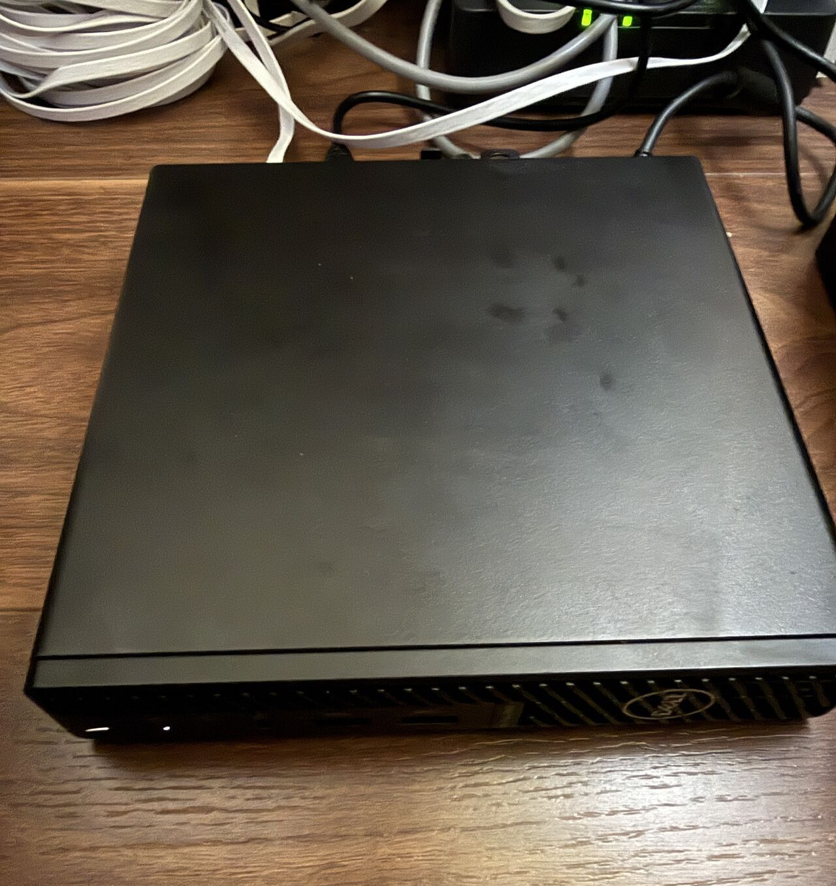
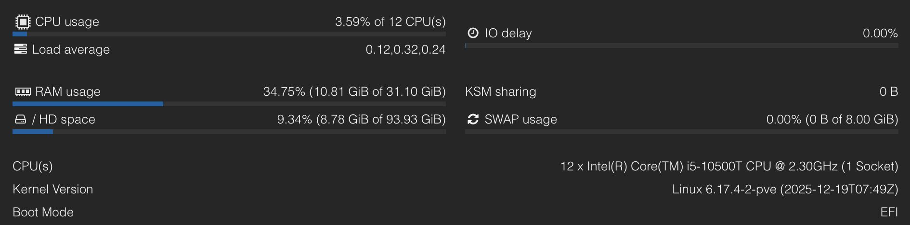

Thirty Days With My Home Server
How a used Dell Optiplex 3080 off Facebook Marketplace became my home server and my new toy.
It’s been just over 30 days since I built and installed my own home server, and I can confidently say the journey so far has been a valuable hands-on learning experience.
I started with purchasing a used Mini-PC off Facebook Marketplace. This decision has proven to be a cost-effective way to get into self-hosting without breaking the bank.
Storage was my first lesson. Due to the Dell Optiplex Micros small form factor, the system only supports a single 2.5” drive. High-capacity 2.5” drives are increasingly scarce and, in many cases, not brand new, which can impact reliability. This made it clear that when I eventually migrate to a server with a larger chassis, I’ll be able to install multiple 3.5” drives and experiment with RAID technologies, trading some capacity for redundancy to protect data in the event of a drive failure.
Next, it was time to purchase the right accessories. A Netgear switch and a Cat 6 Ethernet cable ensures the server has stable and consistent network connectivity. I then upgraded the system with a 2TB SSD for my OS. I opted for Proxmox which is a hypervisor that allows for deployment and management of virtual machines and containers.
From there I spent time working with:
- File systems, datasets, and permissions
- Media libraries and streaming via Jellyfin
- Managing storage and access through TrueNAS

Along the way, I’ve had to think properly about bottlenecks, trade-offs, and scalability. Things rarely fit into place as you want it, and every issue turns into a learning opportunity.
Recently, I’ve expanded the RAM from 16GB to 32GB, which now gives me the headroom to focus more on cybersecurity projects, such as multiple lab environments and security analysis tools without
Recently, I’ve expanded the RAM from 16GB to 32GB, which now gives me the headroom to focus more on cybersecurity projects, such as multiple lab environments and security analysis tools without running into resource constraints.
My setup isn’t perfect but it’s given me a much deeper understanding of infrastructure, systems design, and how different components interact in real-world environments. I’m excited to keep iterating on this lab and pushing it further.